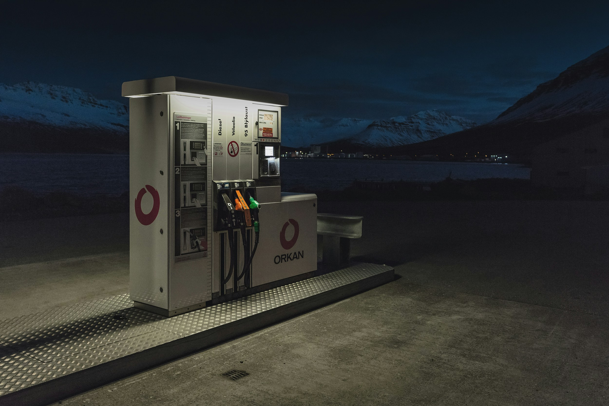
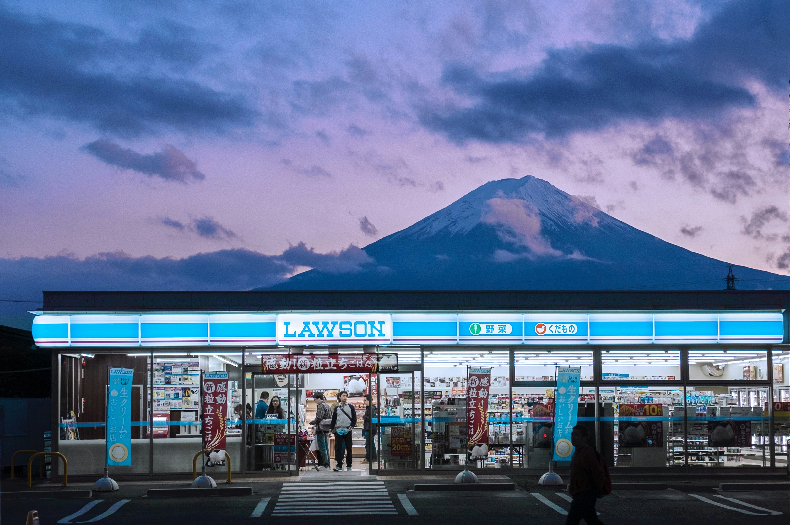

Services we offer
FUEL TYPES
Explore the diverse landscape of fuels that keep our world moving. From classic fossil fuels like gasoline and diesel to cleaner alternatives like biodiesel and natural gas, the graphic showcases the evolution of powering vehicles. A glimpse into the future with electric and hydrogen options hints at the ongoing quest for sustainable and efficient energy sources


CAR AND BIKE RELATED SERVICES
A gas station transformed into a haven for both car and motorcycle care. Hoses snake from pumps to gleaming vehicles, while mechanics work on bikes. Signs advertise oil changes, tire services, and helmet checks. It captures the convenience of a single location offering fuel, maintenance, and safety essentials – keeping vehicles running smoothly and journeys worry-free.
CHARGING INFRASTRUCTURE
Traditional fuel pumps stand alongside sleek electric vehicle charging stations. Neon signs advertise gasoline options next to glowing icons for electric charging. It captures the crossroads of tradition and innovation, where the future of fueling offers choices for every driver.

